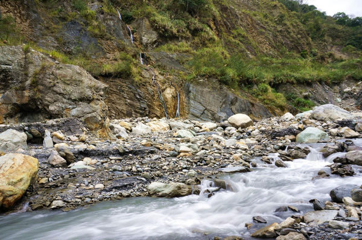
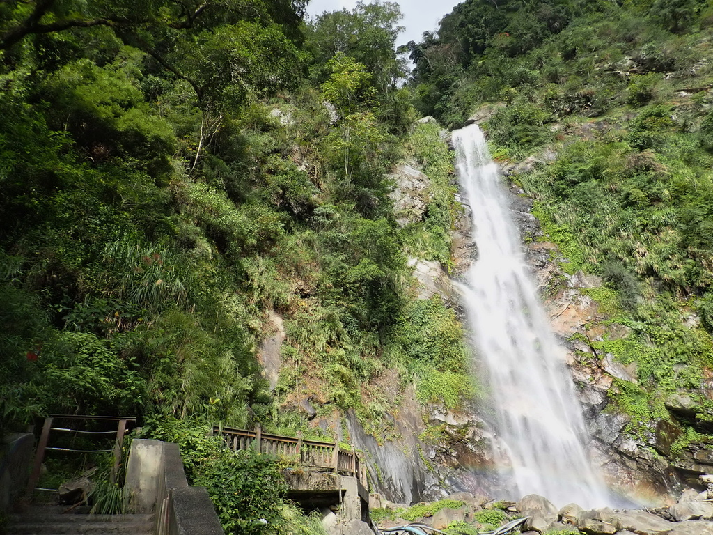
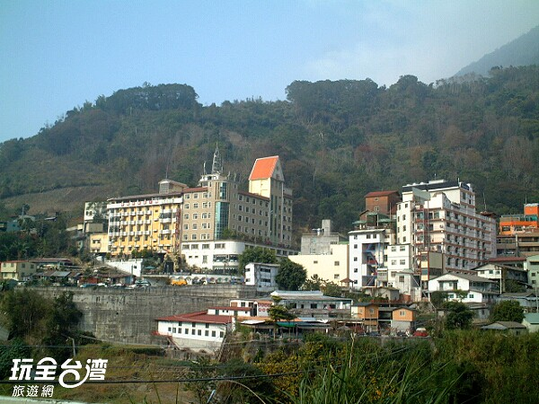
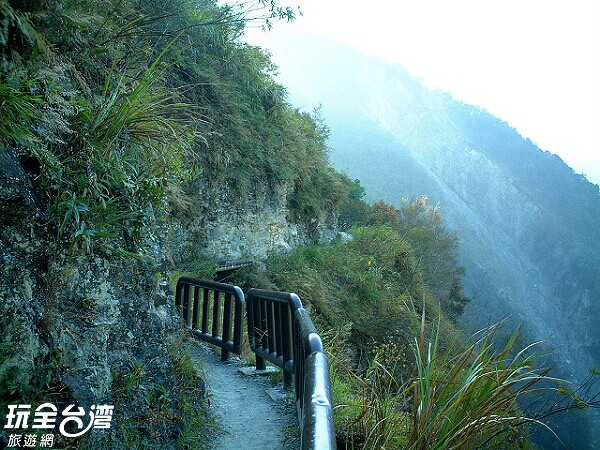
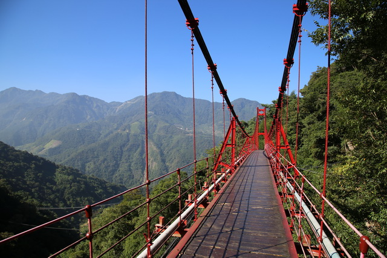
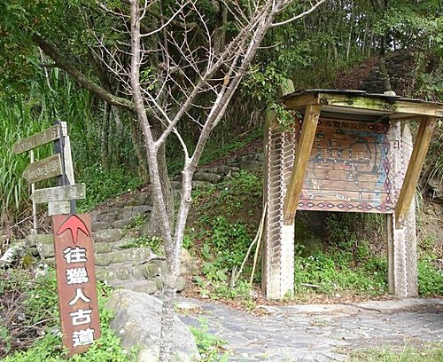
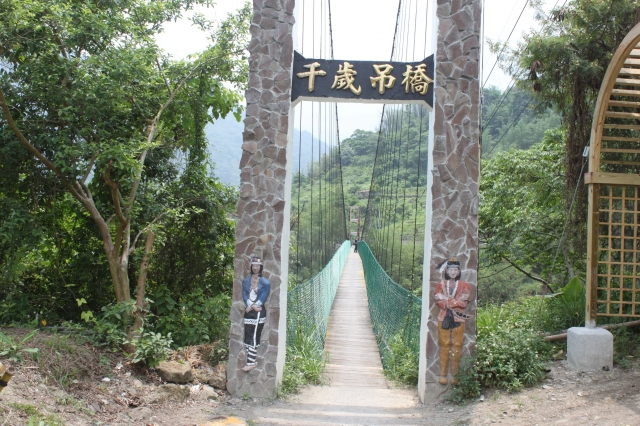
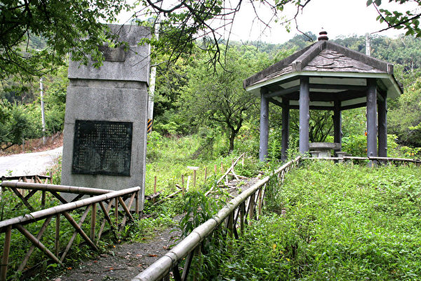
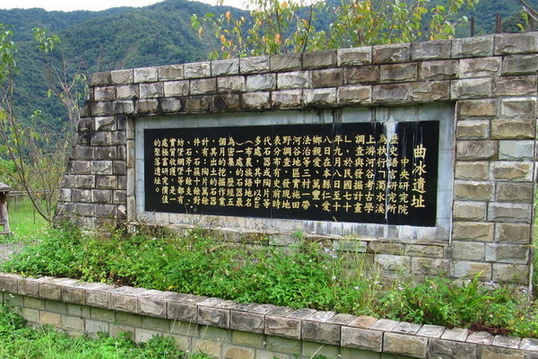

|
塔塔加遊憩區無南投縣信義鄉 塔塔加遊憩區位於玉山國家公園內，塔塔加海拔2610公尺，為新中橫公路最高點，也是台18線(嘉義-玉山段)、台21線(水里-玉山)之交界點。 |
|  |
樂樂谷野溪溫泉東埔部落南投縣信義鄉 樂樂谷溫泉位於南投縣信義鄉，八通關古道下的陳有蘭溪溪谷中，區內除了多處溫泉及溫泉小河流外，還有奇特的鐘乳石景觀，及環恃的原始森林景緻，樂樂谷可謂名副其實。 |
|  |
彩虹瀑布(情人谷)東埔部落南投縣信義鄉 沿著情人谷扶梯再往前走，就是氣勢磅礡彩虹瀑布，只要天氣良好，中午1～2點時，瀑水形成的水氣彌漫在瀑潭上方，經陽光照射，便會呈現出一道美麗的彩虹，每逢星期例假日就有許多民眾來此登山探訪碧綠山谷直洩而下的彩虹瀑布。 |
|  |
東埔溫泉區東埔部落南投縣信義鄉 東埔溫泉位於陳有蘭溪畔，海拔約1200公尺，泉源在東側的望鄉山麓，由車站步行大約半小時就可以到達，泉質屬弱鹼性碳酸泉，溫度約為攝氏48度，水質透明純淨，終年不竭，據說可以清除疲勞、促進健康等效用，溫泉由溪谷湧出，泉水再引流至各旅館、飯店，提供遊客溫泉享受。 |
|  |
父不知子斷崖東埔部落南投縣信義鄉 父子斷崖又稱父不知子斷崖，位於八通關古道入口，為風化頁岩的大崩壁景觀，因地形險惡，經常落石不斷，因而有個傳神的名稱，意味著即便是父子兩人同行至此，也無法互相照應，「父子斷崖」這段路雖然行走起來驚險萬分，但是目前斷崖部份已圍上了可以攀握的護欄及繩索，提高了健行的安全。 |
|  |
彩虹吊橋東埔部落南投縣信義鄉 彩虹吊橋位於東埔溫泉區後半山腰，於民國92年元月完工啟用的紅色大吊橋，從勝華飯店後方山路順溪而上，先見彩虹吊橋，吊橋過後，能看見相當美麗的「彩虹瀑布」。步道前段需攀登小段小陡坡，但只要堅定往上爬，美景即在眼前。 |

|
八通關古道東埔部落南投縣信義鄉 八通關古道入口處在東埔溫泉區往布農部落方向，有明顯指標，八通關一名原是鄒族對玉山的稱呼，清朝為打通東西交通，派總兵吳光亮率領飛虎軍所開闢，而總兵吳光亮沿用此名，取其四通八達，入口有如隘口之意思，更成為日本警備道路網的一環，由東埔入山，沿途景色優美，有雲龍、乙女瀑布、斷崖、草原等景觀，目前更為時下熱門的登山健行古道，並且也可由此登玉山。 |
|  |
獵人古道望鄉部落南投縣信義鄉 望鄉部落的馬奴多斯獵人古道，早期原 是KaLiBuan的布農族人傳統獵場，古道 四周有數百甲林場，生態相當豐富多元 ，走在獵人古道上可體會到當時族人打 獵時的意氣風發，也可感受玉山群峰聳 立眼前的壯闊氣勢，此處是近年遊客與 登山客們最喜愛的望鄉旅遊行程之一。 |
|  |
千歲吊橋望鄉部落南投縣信義鄉 『千歲吊橋』建於清光緒年間，是以前連接信義鄉『久美部落』與『望鄉部落』間的唯一通道，總程度約有500公尺，但橋面寬僅有1公尺左右，走在橋上，上下左右都會晃動，據說，一口氣走過『千歲吊橋』不回頭，可以延年益壽。 |
|  |
萬興關望鄉部落南投縣信義鄉 清同治13年，日軍侵犯牡丹社，當時的船政大臣沈葆楨提出『開山撫番』政策。光緒元年，吳光亮開闢東西橫貫公路。至光緒13年首任雲林撫墾局委員陳世烈建翻學堂於『楠仔腳滿社』於今日南投縣信義鄉『久美村』。該學堂仿照書院規模，陳世烈親題『萬興關』於學堂門口，並請粵人陳國安擔任教席。然而，後來因教育實施不得宜，學童避忌就學，隨後未及1年，學生絕跡，此一設施遂告廢絕。『萬興關』石碑久經堙沒，後為當地日本警察發現，經鑑定後卻訂為清代設立的學堂遺物，並於民國70年將『萬興關石碑』需回『久美部落』的原址。『萬興關』是台灣建省時期劉銘傳撫墾措施中最具體的『撫番』政策，也是將教育制度推向後山的先驅。 |
|  |
曲冰遺蹟萬豐部落南投縣仁愛鄉 南投縣仁愛鄉濁水溪上游有一座曲冰遺址，約在海拔高度七百至九百公尺處，佔地面積約九千多平方公尺，位在萬豐村布農族曲冰部落的北方一點五公里處，因原住民有遊耕的生活習性，判定是為千年前布農族人在土地貧瘠後遷往它處所留下的聚落遺址，為三級古蹟。 |